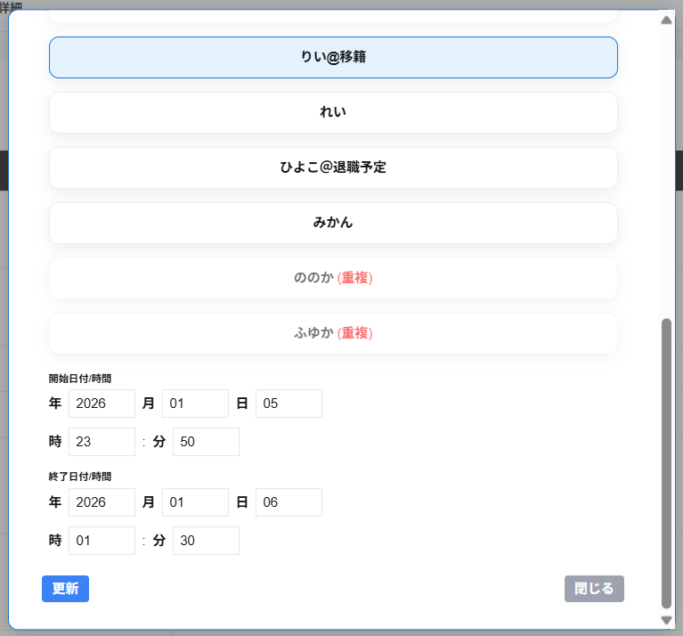

キャスト編集の画面に以下の項目が表示され、編集することができます。
・キャストの一覧
キャストの一覧から予約・接客をするキャストを選択することができます。
予約・接客の開始日付/時刻から終了日付/時刻の間に、他の接客・予約・休憩があるキャストは選択できません。
予約・接客の開始日付/時刻から終了日付/時刻の間に、他の接客・予約・休憩がある場合、キャスト名の欄に(重複)と表示され、キャスト名が半透明に表示されます。
・開始日付/時刻
予約・接客の開始日付/時刻を編集することができます。
・終了日付/時刻
予約・接客の終了日付/時刻を編集することができます。
・退職キャストも表示
退職キャストも表示を選択すると、キャストの一覧に退職キャストも表示されます。
・更新
画面左下に更新が表示されます。
更新をクリックすると、選択したキャストで更新することができます。
